Yet another incredible review by The Cage, this time our album Blown Away.
“Hovercraft proves with Blown Away that time only sharpens real music, it never dulls it.”
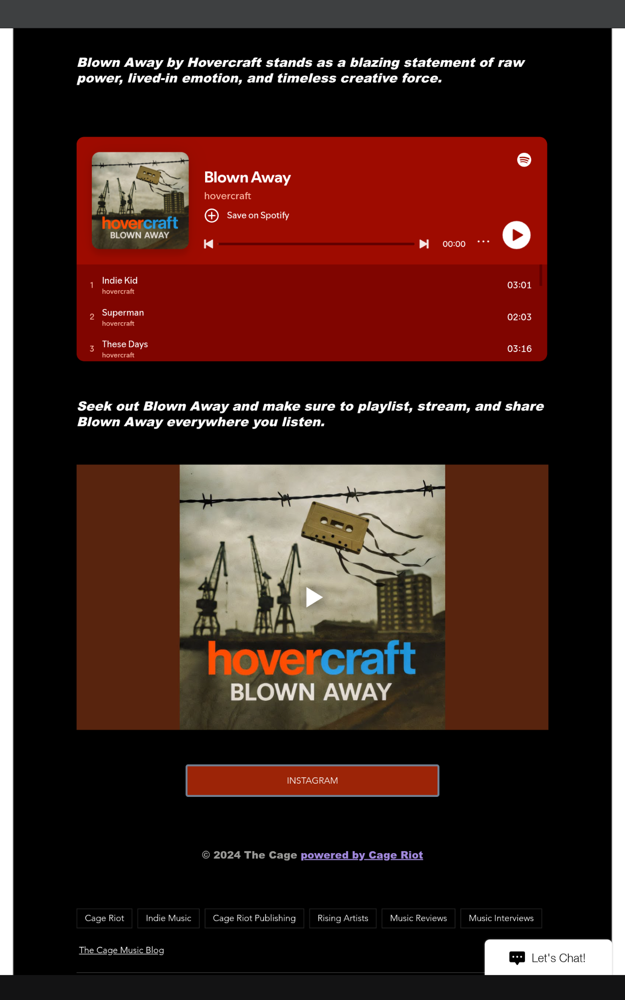
“Hovercraft doesn’t chase moments on Blown Away, they create them.”
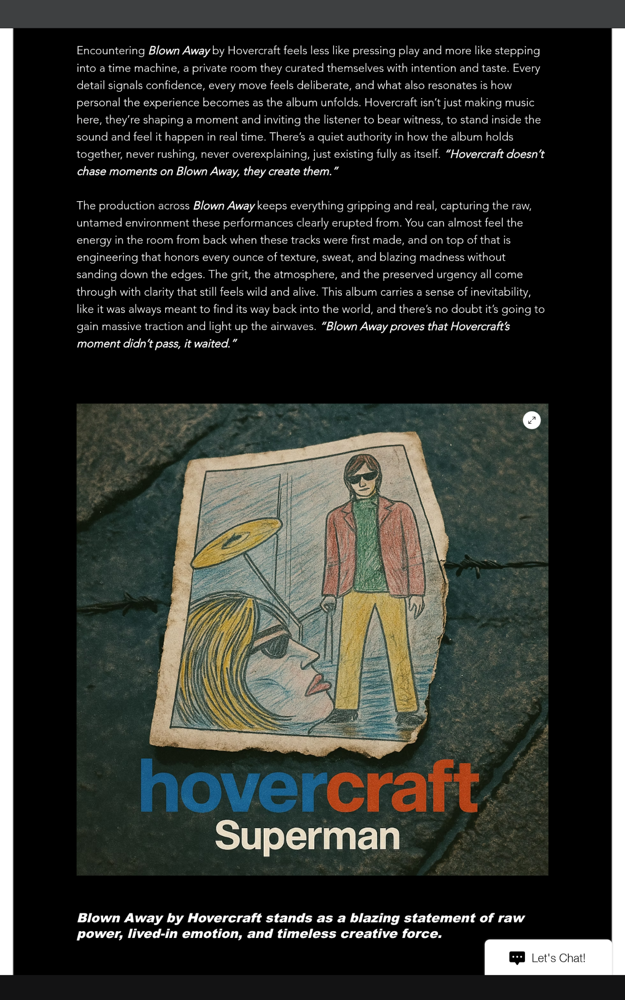
“Blown Away proves that Hovercraft’s moment didn’t pass, it waited.”
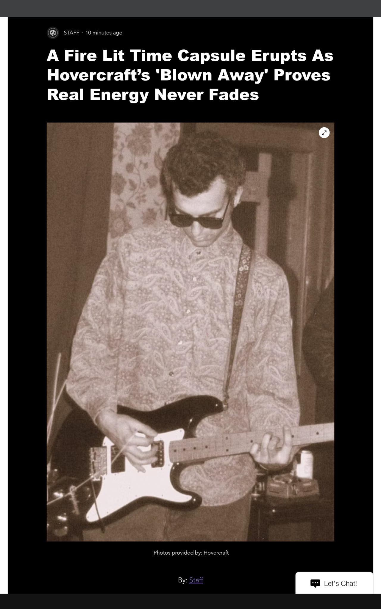
Blown Away by Hovercraft stands as a blazing statement of raw power, lived-in emotion, and timeless creative force.
Our friends at The Cage wrote wonderfully about New Pine Overcoat / Angel
“Hovercraft keeps finding new ways to make familiar feelings hit with startling force.”
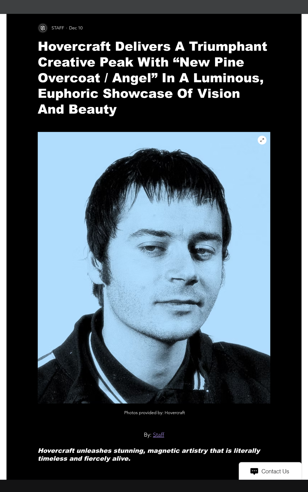
“Angel proves Hovercraft knows exactly how to make vulnerability sound triumphant.”
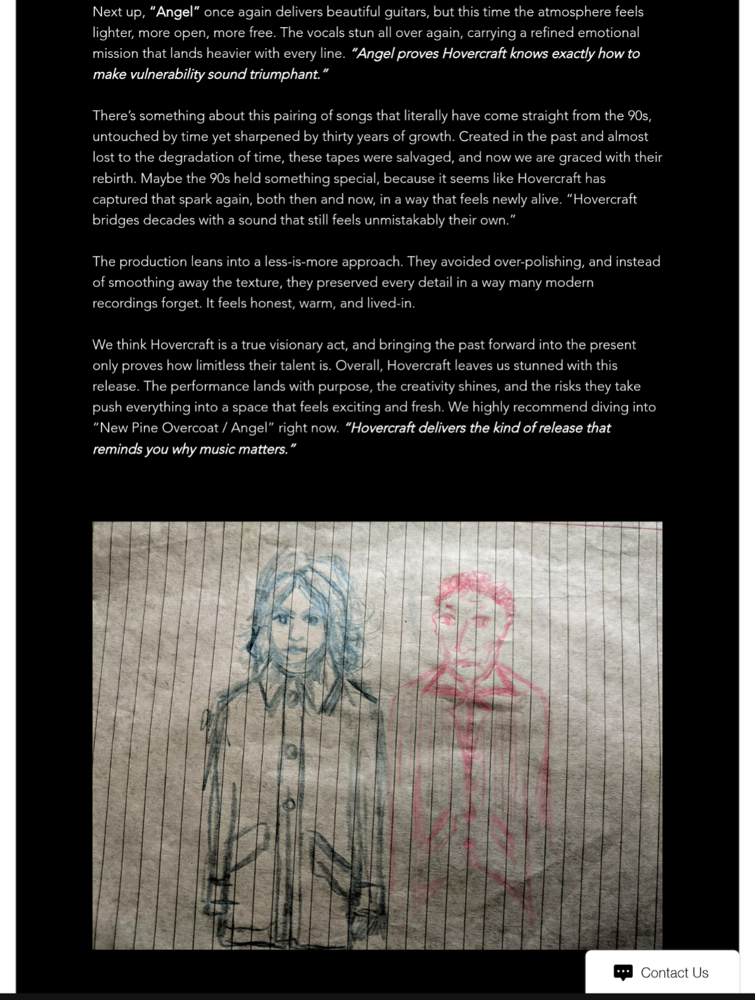
“Hovercraft delivers the kind of release that reminds you why music matters.”
Mike Mineo over at Obscure Sounds reviewed New Pine Overcoat / Angel:
“…Warm, folk-rooted guitar tones… dreamy vocal intoxication… heartbreak-laden introspection”
Both these tracks are quality displays of songwriting and heartfelt emotion
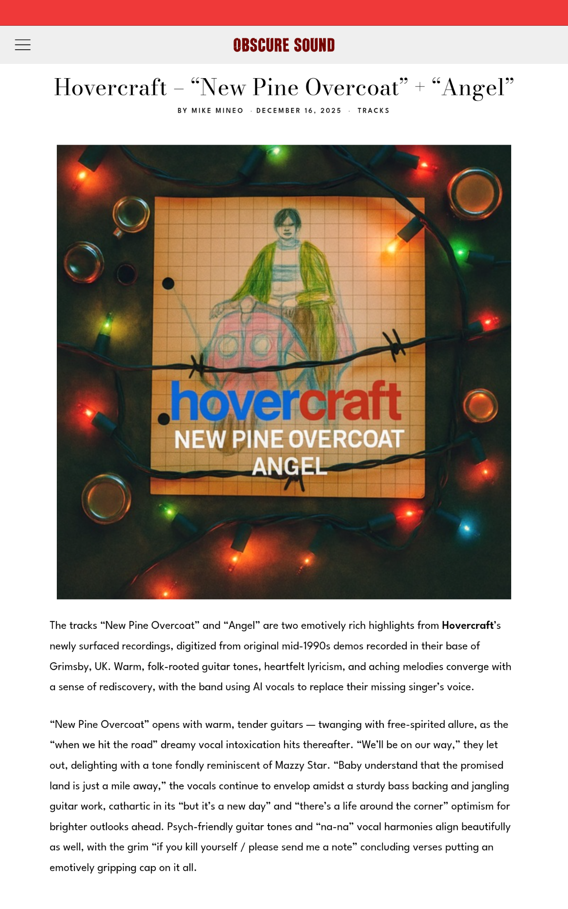
Return Of Rock rocked Blown Away, describing it as:
“…a feral, heart-on-fire album…sounding impossibly alive…feels urgent in the way only real music does.”
‘Blown Away’ moves with remarkable focus. The sequencing feels intentional, drawing you deeper into its emotional gravity with each track.
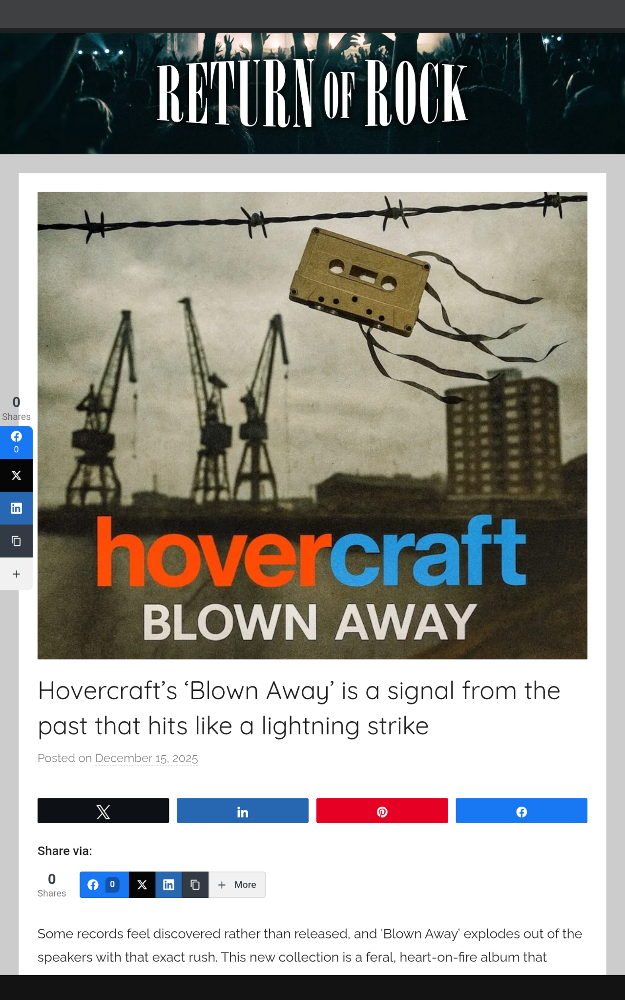
The Whistling Traveller reviews Indie Kid from Blown Away:
dynamic, fun, fast, and sharp as ever.
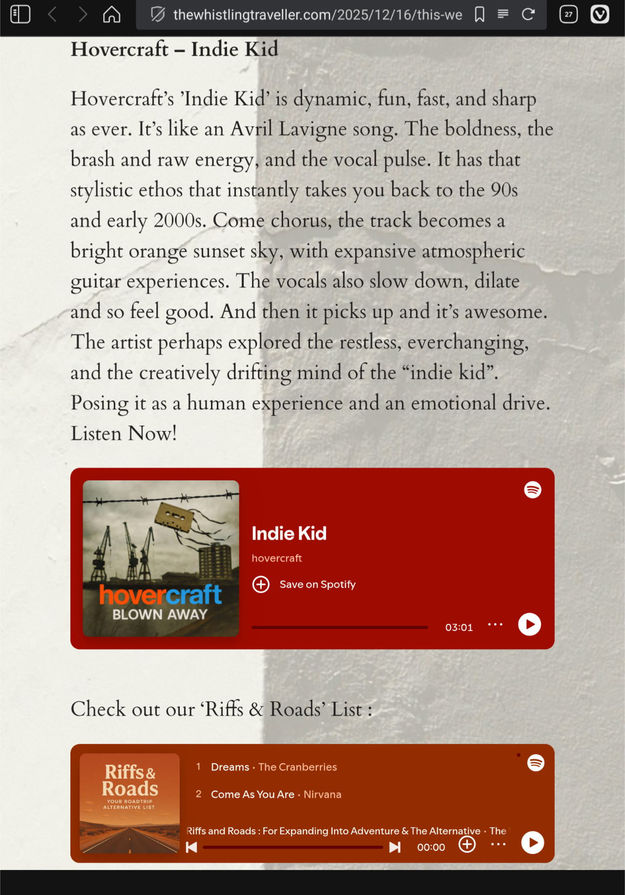
Illustrate Magazine reviewed New Pine Overcoat / Angel and Blown Away.
fragile art rescued from oblivion

a messy and vulnerable final flare shot into the void

A review of New Pine Overcoat at Lost In The Manor:
“…the messy and grand experience of being young”
The songwriting is pretty immaculate

New Pine Overcoat / Angel reviewed in Apricot Magazine:
“…like an apparition from the mid-90s… a drifting folk descent… a joke, a warning, a prophecy… a gentle unraveling”
subtle, poetic, and quietly devastating

A little closer to Grimsby, Graeme Smith’s York Calling reviewed New Pine Overcoat / Angel.
…never stops sounding beautiful and sweet.

Absolutely incredible review of Blown Away by Dave Franklin at The Big Takeover.
“… these are great songs… raw, power-pop groove meets indie cool meets punky energy… Poetic, mystical, and marvellous.”
songs that should have been hits in any era of modern music.

RGM (Reyt Good Music) interview and album review.
“The whole album traces that arc from hope to wreckage, sophistication to chaos. Like Britain itself, really. Like the hovercraft technology we’re named after…”

“…scrappy, unfiltered, and not remotely fussed if the edges slice your fingers… the most honest thing you’ve heard in years”
…messy, desperate and properly brilliant

The Indie Grid reviews Blown Away.
“…These thirteen tracks roar with the youthful volatility… punk-blueprints and scrappy alt-rock skeletons held up to the light… what’s remarkable is how alive this record feels… the kind of track bands spend their whole careers chasing.”
a fever dream of defiance and collapse

Big thanks to Miguel Castillo for his amazing reviews at La Caverna.
New Pine Overcoat / Angel: “…the spirit of a youth oscillating between idealism and fatalism….evoking a world where hope and exhaustion coexist…a devastating portrait of loss, dependency, and bitter resilience.”
…a double release that perfectly embodies its raw, emotional and deeply human aesthetic.

Blown Away: “…the fantasy of escaping reality while admitting the impossibility of sustaining a heroic facade….addictions, disenchantment, vulnerability and the desperate search for meaning.”
…an acidic portrait of British youth, drenched in endless nights and existential disorientation.

Another superlative review from the guys at Music For All!
Blown Away: “…a phenomenal album! A tracklist, incidentally, that has absolutely no decadent moments.
With just the right amount of speed (Charlie would love this one!)

What a fantastic review of Blown Away by Edgar Allen Poets!
“…restless, stylish, and driven by a desire to move… mix of nostalgia and adrenaline… the band proves they’re unafraid to take stylistic risks… dreamy but grounded, hazy but intentional… The groove is infectious…”
Every track contributes something distinct, and together they form a journey that keeps you locked in until the closing note.

A couple of really terrific reviews over at Hit Harmony Haven.
New Pine Overcoat/ Angel: “…raw, human, and unmistakably real… the kind of lyric Britpop could have produced but rarely did… ahead of its time… an emotional arc that feels less like a demo reconstruction and more like a cinematic short film.”
Hovercraft’s revival is not simply nostalgic, but restorative. It bridges time, technology, memory, and grief, turning the act of musical resurrection into an artistic statement of its own.

And Blown Away: “…an emotional excavation… stylish, restless, and subtly melancholic beneath the adrenaline… swagger laid over vulnerability, noise layered over doubt… hypnotic soundscapes… a unique dream-blues sensibility.”
Hovercraft presents not the polished fantasy of what the band could have been, but the flawed, brilliant, beating heart of what it was.

Our friends at Sinusoidal in India reviewed New Pine Overcoat / Angel and Blown Away.

a chance to face the pain, instead of running away from it.

Songwriting, with purpose
Dave Franklin reviewed New Pine Overcoat (“brilliantly mercurial”) and Angel (“wonderfully not quite what it seems”) at The Big Takeover.
What would the Hovercraft story have been had they gone the distance? What would the modern popscape look like today if things had been different? We can only imagine.

Fred Bambridge at It’s All Indie described New Pine Overcoat as “mesmerising” and was “astounded that [Angel] is a 30-year-old track.”
I just feel bad as if this came out in the 90s I honestly feel like the whole world would know about Hovercraft.

Another lyrical and evocative review from our Brazilian friends at Music For All.
Shake, rattle and roll?
There’s plenty of hiss on the old original tape audio from which this new version was created, and you can certainly hear Mr Shimble rattling around on his drum kit. An alternative translation might be: “The track is supported by the ride cymbal’s consistent shimmer (which gives it that raw lo-fi texture) and the snare’s rhythmic rattle, while the sweet fragile female vocal fills the lyrical space, graced by a careful but sufficient bassline.”

“…romantic guitars that reshape into the unusual angles of Mazzy Star.”
“The song unfolds like something out of Phoebe Bridger’s Punisher, taking its time to reveal itself and building steadily with emotional delivery and evocative storytelling.”
Lovely review from LT1KF.

“Americana guitar soundscape and sublime, atmospheric vocals…”
“…the pairing of tracks holds a high emotional quotient and we are fully in awe. We appreciate the sync friendly nature of the releases, and can imagine both songs in movies and TV shows.”
Great review from KIMU.

New Pine Overcoat / Angel
The antidote to Christmas singles you didn’t know you needed.
Before the AI reconstructions, before the rnb and neo-soul transformation of The Promised Land, before the Hovercraft resurrection project — these were the original 1990s demos that survived only because they were kept in cardboard boxes for thirty years.
“New Pine Overcoat” is close to Charlie Pepper’s raw acoustic folk original of the song that later became The Promised Land. It travels from youthful defiance to something darker in under three minutes. Unpolished, intimate, and far closer to the bone than the later reconstruction.
“Angel” begins with breathless acoustic longing and ends in bitter, coming-of-age defiance — Christmas angels with broken wings, impossible love turning into clarity. The ending lands exactly the way Charlie wrote it: unexpectedly sharp.
These tracks come from the original Hovercraft tapes recorded in Grimsby, 1995–96. Digitised, repaired, and released as part of the ongoing search for our missing songwriter and friend, Piers “Charlie Pepper” Wildman, last known to be in the Bournemouth area.
Every release is both memorial and message.
Sending a note, hoping someone reads it.
Lost Songs.
Vanished Songwriter.
Resurrected Band.
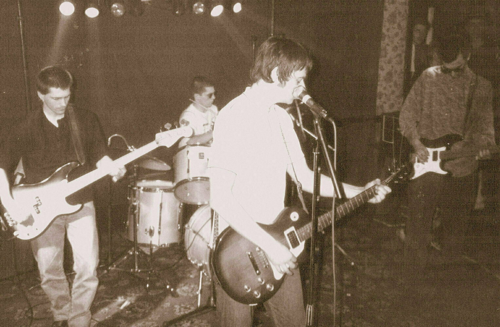
In 1995, four friends from Grimsby formed a band called Hovercraft.
They played loud.
They played raw.
They wrote songs that meant something.
Their demo “Mr Tooting Brown” hit No. 1 on the local charts.
And then, in 1996, their songwriter Piers “Charlie Pepper” Wildman vanished.
One day he was rehearsing with the band.
The next, he was gone.
No note. No explanation.
Just a missing friend and a box of cassette tapes.
Hovercraft fell apart.
The Resurrection
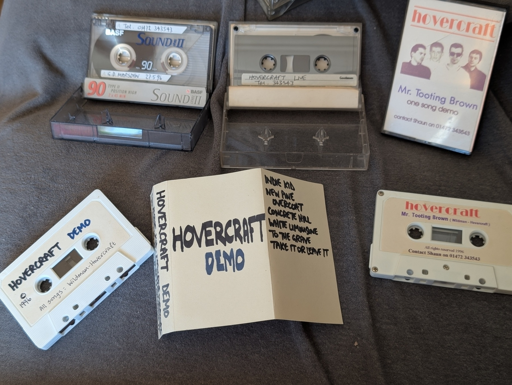
For nearly thirty years, the tapes sat in drawers and cupboards — warped, tangled, half-erased by time.
In 2024, surviving members Golly God and Ron Nasty began a strange experiment:
Rebuilding lost songs using:
- battered cassette tapes
- fragmentary lyric sheets
- half-remembered arrangements
- and new AI reconstruction tools
Not remastering.
Not re-recording.
Reconstructing.
What emerged wasn’t nostalgia.
It was sound archaeology — a band being dug up and rebuilt, piece by piece, memory by memory.
Current momentum
Hovercraft’s resurrection is spreading:
- now on 72 playlists with a combined 186K reach,
- nearly 3,000 streams across Spotify,
- over 500 playlist adds,
- 26 press features across five continents,
- and listeners saving songs at above-average rates.
Three Albums. One Long Message.
SHAKEN NOT STIRRED
Neo-soul sophistication · October 2025
“A work of sound archaeology.” — La Caverna (Mexico)
ON THE ROCKS
Darker, experimental terrain · November 2025
“Falls into our world through a crack in time.” — Punk Head
BLOWN AWAY
Raw indie-punk catharsis · December 5, 2025
The Story We’re Still Living
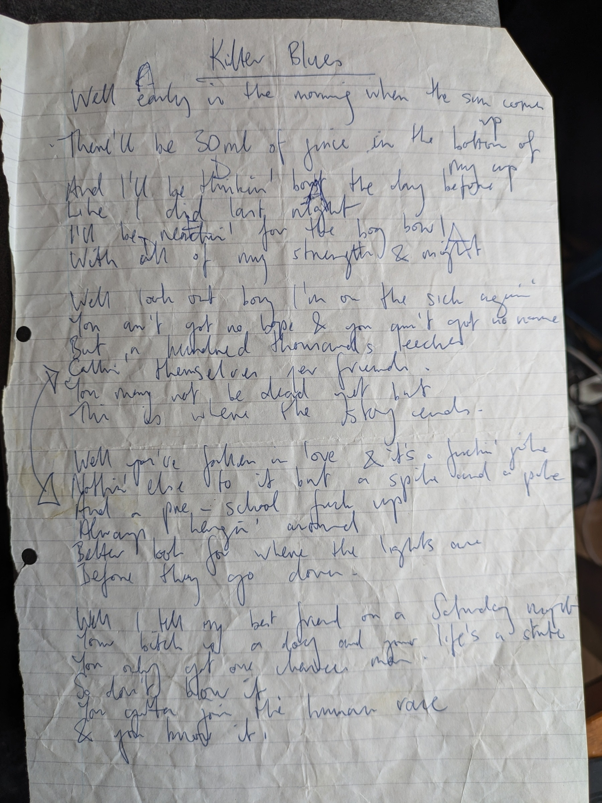
- 1995: Hovercraft form in Grimsby. “Mr Tooting Brown” hits local No. 1.
- 1996: Songwriter Piers “Charlie Pepper” Wildman disappears. Band collapses.
- 2015: Brief Facebook contact, then silence.
- 2025: AI reconstruction begins. Cassette tapes digitised. Lost songs resurrected.
- 2025: Listeners around the world hear Hovercraft for the first time.
But the story was never just about the music.
It’s about four friends who lost one of their own.
It’s about finishing something that never got an ending.
It’s about sending a signal into the dark and hoping someone hears it.
Every song we release is both memorial and message.
The Search for Charlie
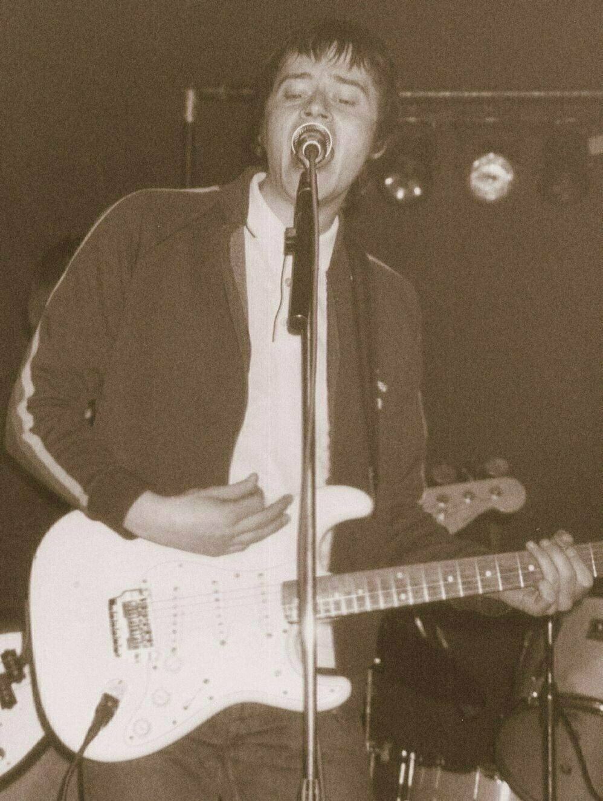
Piers “Charlie Pepper” Wildman
Last believed to be in the Bournemouth area around 2017.
No confirmed contact since.
If you knew Charlie — if you met him, worked with him, saw a post, heard a rumour, or have even the smallest detail — we would like to hear from you.
Contact:
All messages kept confidential.
Blown Away available for pre-orders
The final devastating act of our debut trilogy. Not for the faint-hearted.
EARMILK Reviews "On The Rocks": "This album takes them into a moodier, more experiential terrain."
“On The Rocks,” the new album by hovercraft, reflects the group’s most audacious attempt to explore the emotional abyss left by the band’s vanished songwriter, Piers “Charlie Pepper” Wildman. Self-released via BandLab, the 12-track blend of Alt, R&B, Neo-soul, and Indie-rock finds Pepper’s surviving members, David “Golly God” Marsden and Aaron “Ron Nasty” Downing, doubling down on their mission to bring Pepper’s unreleased catalog from the dead, with way more grit, introspection, and emotional volatility.
Via EARMILK

Apricot Magazine on On The Rocks: "...haunting, electrifying, deeply human..."
“Some albums arrive gently. Others crash through the door like a memory you thought you buried. Hovercraft’s On The Rocks, released November 5, 2025, falls into the latter category. It doesn’t knock. It doesn’t ask permission. It simply appears, as if pulled through a rip in the timeline, carrying with it the spirit of a band half-present, half-lost, and fully resurrected through a project unlike anything else happening in modern music.”
Via Apricot Magazine.

Two music critics debate the hovercraft resurrection story
Google NotebookLM generated podcast based on original source material.
The two hosts discuss the ethics and innovation of using AI to recreate original music, the trilogy structure and emotional narrative of the band’s new albums, music reviews and top tracks, and finally the human story behind it all and the search for the band’s lost songwriter.
A Hidden Gem
“Shaken Not Stirred sounds like something that falls into our world through a crack in time. It’s haunting, retro, and yet, not overly nostalgic. It feels like an album that doesn’t belong in this century, or perhaps it’s just ahead of its time. Hovercraft’s 2025 album is elegant and sensitive, passionate but melancholy. A hidden gem that’s haunting and powerful.”

“Shaken Not Stirred is more than an album—it’s resurrection art.”
Mr Tooting Brown
You Better Knock This Down
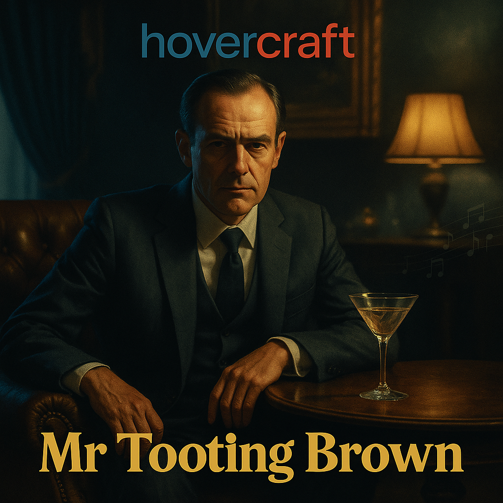
—▶️ Listen to an exclusive preview mp3 of our new single, soon to be available on all major streaming platforms.
You Paid A Price To Come This Far
Some songs resist digital resurrection. In our quest to revive the lost catalog of Grimsby indie legends Hovercraft using AI, we discovered that “Mr Tooting Brown” - the track that started it all - simply couldn’t be replicated. Every algorithm failed to capture its essence. Multiple AI tools, various prompts, different approaches - nothing came close to the original’s mysterious alchemy.
This is the story of how we finally brought it back, and why some music requires more than artificial intelligence to truly live again.
Since You Turned On
It was 1995 when Charlie Pepper arrived in Grimsby - pissed and potless on the last train from Winchester. No guitar, no equipment, just this mysterious songwriter with songs rattling around in his head. We were looking for “a chilled out lamppost to front a retro space pop band.” What we got was something entirely different.
When Charlie picked up my acoustic guitar and played “Mr Tooting Brown,” he sounded like a young Bob Dylan crossed with John Lennon - raw, immediate, undeniably special. I knew instantly he had something unique. He wasn’t what we were looking for at all, so naturally, we signed him up immediately.
There’s A World Outside My Window
The beauty of “Mr Tooting Brown” is how it’s lived multiple lives, each revealing different facets of its creator’s genius.
That original performance on my guitar was pure folk storytelling - mysterious, intimate, with Charlie addressing this enigmatic “Mr Tooting Brown” character throughout. The name itself was brilliant wordplay, simultaneously ridiculous and dignified, working class yet somehow mythic. If only I’d had the foresight to record him then. Unfortunately, my phone back then was attached to the wall by a cable.
It’s Getting Better All The Time
For nine months, we transformed Charlie’s acoustic confessions into something urgent and electric. The Hovercraft version became a loud, distorted anthem that got smoothed over in the studio, ending up sounding more like Oasis’s “Don’t Look Back In Anger.” It hit number one on the local demo chart, proving the song’s immediate power to connect with listeners.
A Method In My Madness
Last week I got a new tape to digital converter, which was as good an excuse as any to dig through those old boxes again.
▶️ Here’s an exclusive digital copy of the original 16-track studio version, recorded at the famous Pete’s Pad in Cleethorpes. Suitably inspired, Peter later went on to form his own band “Submarine”.
Then, true to the song’s own prophecy, Charlie took “the first train out of town this morning.”
Everyone’s A Clown
Fast forward to our AI reconstruction project. “Mr Tooting Brown” was the one track that defied every attempt at digital resurrection. Finally, I went back to basics - relearned how to play it on acoustic guitar, recorded myself singing it slowly and mournfully, mistake-ridden but honest.
▶️ Thirty years on, desperately trying to channel that young Pepper/Dylan/Lennon.
Getting Deep Down When You Lose Control
I uploaded those two minutes to Suno, and something clicked.
Fairly early on in our experiments with AI, we created “The Chills Remix” and “Anti-Gravity Remix” - showing how the song’s DNA could be reimagined in completely different contexts. Each version reveals new aspects of the original’s versatility, proving that truly great songwriting transcends genre boundaries.
But You Believe in Rock ‘n’ Roll
It was this latter version that went on to become…
I don’t remember how, but somehow I went from using “Atmospheric, british, ironic” style tags to generate a cover version to using what has now become one of my established Suno “personas”. This transformed it into something unexpected: a slow-tempo jazz piece featuring a female vocalist with smooth alto range, clean piano, walking bassline, horn section and trumpet solo.
It sounds like a James Bond theme sung by Shirley Bassey.
Signing In Blood
The jazz transformation revealed something that had been hidden in the song all along. Ron Nasty (now Nice), my second pair of ears, reminded Charlie was always a massive Bond fan, and “Mr Tooting Brown” carries all the sophisticated DNA of classic spy cinema - the mysterious character study, the elegant wordplay concealing darker meanings, the cinematic scope that transforms a simple song into something larger than life.
The coded sophistication of lines like “You paid a price to come this far” and “Everyone’s a clown / But you believe in rock and roll” suddenly made perfect sense. This wasn’t just indie songwriting - it was Fleming-style character creation, complete with a villain name that could have stepped out of a Sean Connery or Roger Moore film.
When You Sell Your Soul
The AI reconstruction process revealed fascinating insights about what makes music truly unique. Algorithms can mimic structure and ape style, but they struggled with the soul of “Mr Tooting Brown.” It required human memory, emotional connection, and that initial authentic performance to give the AI something real to work with.
The final version required surgical audio editing - the AI vocal inexplicably mangled one line, forcing me to cut and paste the replacement from later in the song. It’s a perfect metaphor for the entire project: human creativity and artificial intelligence working together, each covering for the other’s limitations.
When You’re Facing The End
What started as digital archaeology became something more profound. These aren’t just songs we’re bringing back - they’re musical time capsules that capture moments of pure creativity. The jazz version of “Mr Tooting Brown” feels like discovering what the song had always wanted to become.
Every transformation - acoustic to electric to jazz - honors different aspects of Charlie Pepper’s artistry: the intimate storyteller, the rock and roll believer, the sophisticated wordsmith who could create characters that live in your imagination long after the music stops.
Cos There Ain’t Nothing Else
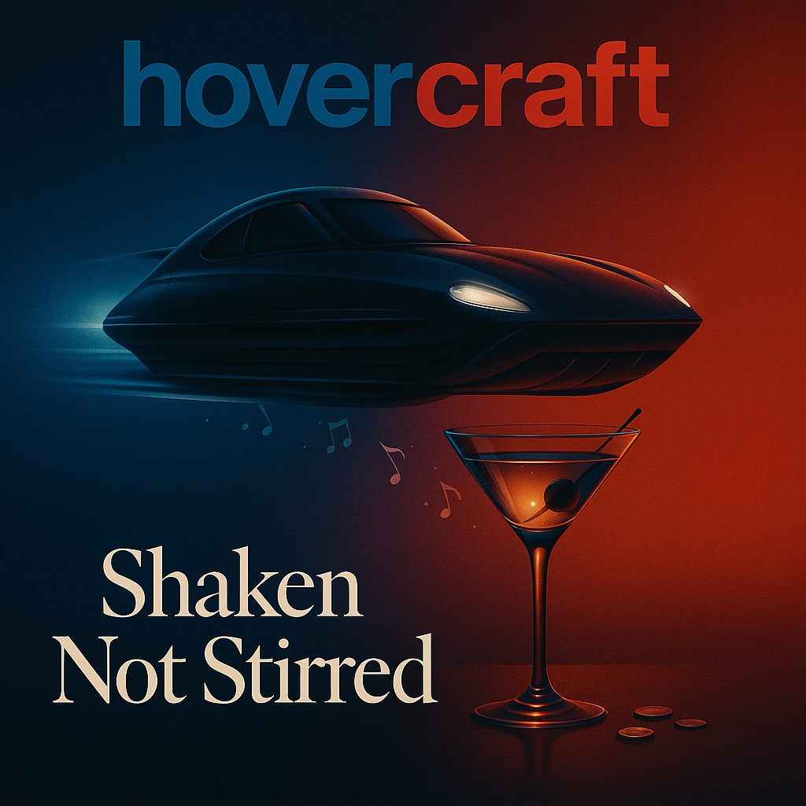
“Mr Tooting Brown” will soon be available on all streaming platforms and as part of our soon to be released debut album “Shaken Not Stirred”, alongside the experimental remixes. It’s the song that started everything - a testament to what happens when genuine artistry meets innovative technology.
The jazz version, with its Bond-theme sophistication and torch-song elegance, represents the culmination of a nearly 30-year journey. From that first acoustic moment in Grimsby to this AI-assisted resurrection, it proves that great songs don’t just survive - they evolve, adapt, and find new ways to move people.
Some music is meant to echo through time. Some characters are meant to remain mysterious. And sometimes, the best way to honour an artist is to let their work speak for itself.
I Will Prob’ly Give You Diamonds
In an age of algorithmic predictability, “Mr Tooting Brown” reminds us that the most powerful music still comes from that indefinable place where human creativity meets genuine emotion. The fact that it initially resisted AI replication only proves its authenticity.
Every stream, every discovery, every moment someone hears this song for the first time - the art continues its journey through the world, carrying its creator’s voice to places and people we never could have imagined.
If this music finds its way to you somehow, know that we never stopped believing in rock and roll.

Higher Ground
AI Reconstruction • 2025 • Originally “Concrete Hill” (1996)
Working week has come and gone
And I can do my thing
Just hang out with my friends
Who wanna hear me, wanna hear me sing
And I want to be free
We keep on tryin' for higher ground
You feel too scared, you gotta find your sound
And I may not fly but watch me try
Break on through, you can
You can lift me right up to the sky
And I believe it
And I believe it
And I believe it
And I believe it
And I believe it
Happy sunshine Saturday
I wake up and I see
Clearly through my eyes again
What I want to be
And I want to be free
About the Song:
Originally titled “Concrete Hill,” this track has been transformed from a “dancey indie guitar track” into what God describes as “high-energy Afrobeat/Neo-Soul/Jazzy tune.” The AI reconstruction features uptempo, soulful pop rock with a driving bass line, arpeggio piano, and uplifting horns that “swell and recede in huge waves.”
Industry professionals have described it as having an authentic vintage feel with contemporary appeal - perfect for sync licensing in uplifting commercials, empowerment campaigns, or feel-good film montages.
Listen:
🎵 Spotify
🍎 Apple Music
© 2025 Wildman/Hovercraft • Original composition by Piers “Charlie Pepper” Wildman (1996) • AI reconstruction produced by David “Golly God” Marsden